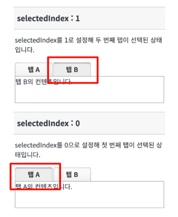
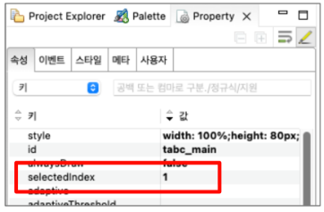

TabControl가 로드 될 때 시작하는 탭의 Index를 설정하는 예제입니다. 속성 selectedTabIndex에 값을 입력해서 설정합니다. 탭의 Index는 첫 번째가 0부터 시작해서 0, 1, 2 순서대로 배정됩니다.
selectedIndex를 설정해 시작 탭을 변경한다.
STEP 1. 페이지가 로드됐을 때 selectedIndex에 맞는 탭이 선택되어있는 것을 확인합니다.
TabControl에 탭 'TAB1'이 구성되어 있습니다.
그림 1.브라우저(Chrome) 실행 예시

TabControl을 선택하고 selectedIndex 옵션을 원하는 탭의 Index로 설정합니다.
그림 2.property 속성 예시

화면 소스 예시
// selectedIndex를 1로 설정해 두 번째 탭으로 시작하도록 설정 <w2:tabControl ... selectedIndex="1" ...> // 중략 </w2:tabControl>
selectedIndex